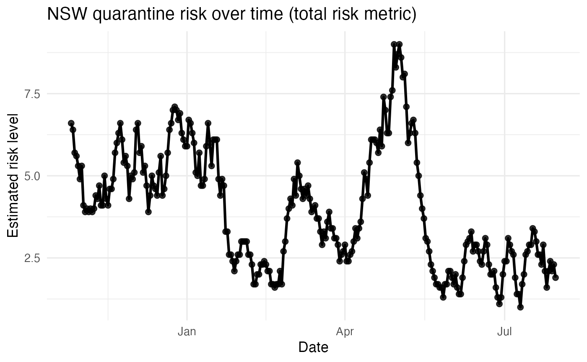

overview.RmdThis vignette introduces the covid_breach_data dataset included in the CovidRiskExplorer package.
The dataset comes from modelling work on quarantine outbreak/breach risk during the emergence of the SARS-CoV-2 Delta variant in Australia (Lydeamore et al., 2023, Science Advances). It was supplied for analysis in ETC5523.
Each row represents: • one date, • one state/territory (e.g. NSW, VIC, QLD, AUS), • one risk metric (either “total” or “breach”), • a numeric value estimating daily risk.
We can use this dataset to explore how quarantine system risk changed over time in different parts of Australia.
## # A tibble: 6 × 4
## report_date state metric value
## <date> <chr> <chr> <dbl>
## 1 2020-10-27 AUS total 12
## 2 2020-10-27 NSW total 6.6
## 3 2020-10-27 NSW breach NA
## 4 2020-10-27 VIC total 0
## 5 2020-10-27 VIC breach NA
## 6 2020-10-27 QLD total 0.4The data records two related quantities: • total: estimated overall quarantine risk, i.e. the modelled likelihood that the quarantine system could lead to spread into the community. • breach: a more specific estimate focused on risks associated with quarantine system failures or “leaks”.
Not every state has both series available for every day. For example, some combinations (like AUS + breach) may be missing or entirely NA. That reflects limits of what could be modelled or attributed at that level.
For communication, this matters: you should not assume every line is available for every region.
In the Shiny dashboard included with this package, the sidebar lets
the user choose both a state/territory and a risk metric (“total” or
“breach”). The app is data-aware: if a state does not have meaningful
values for breach (for example, if all those values are
missing), the dashboard will automatically hide breach for
that state and only offer total. This prevents the user
from seeing an empty plot and also makes the limitation explicit instead
of pretending the data exists.
Below we focus on New South Wales (NSW) and look at the “total” risk time series over the full period in the dataset.
covid <- get_covid_data()
nsw_total <- covid |>
filter(state == "NSW", metric == "total") |>
filter(!is.na(value))
head(nsw_total)## # A tibble: 6 × 4
## report_date state metric value
## <date> <chr> <chr> <dbl>
## 1 2020-10-27 NSW total 6.6
## 2 2020-10-28 NSW total 6.4
## 3 2020-10-29 NSW total 5.7
## 4 2020-10-30 NSW total 5.6
## 5 2020-10-31 NSW total 5.3
## 6 2020-11-01 NSW total 4.9Now we plot the daily risk for NSW.
ggplot(nsw_total, aes(x = report_date, y = value)) +
geom_line(linewidth = 1.1) +
geom_point(size = 2, alpha = 0.8) +
labs(
x = "Date",
y = "Estimated risk level",
title = "NSW quarantine risk over time (total risk metric)"
) +
theme_minimal(base_size = 13)
This plot shows how the modelled quarantine-related risk for NSW changed day by day.
Spikes in the line correspond to periods where the quarantine system was under more strain or judged more likely to “leak” infection into the community.
Sustained low values suggest times where quarantine controls were working reliably.
In practice, this means: - If you see a single sharp peak, that could indicate an acute incident (e.g. a specific breach or failure). - If you see an extended elevated plateau, that could indicate a longer period in which the system was struggling, not just a one-off event.
These interpretations are exactly the kind of narrative you would communicate to a non-technical audience, policy team, or media outlet.
The interactive Shiny app in this package does three things: 1. It lets users choose a state/territory and a risk metric (total or breach), then view that state’s daily risk as a time series. 2. It allows date range filtering, so someone can zoom in on periods of interest (for example, December 2020 vs June 2021). 3. It automatically generates plain-language summaries, including: • the average risk in the selected window, • the date of the peak, • an interpretation paragraph about what that means.
This is intentional. The goal is not just to dump raw numbers, but to support a story like:
“In early January 2021, NSW showed elevated breach-related risk, followed by a decline. By late February the system appeared more stable.”